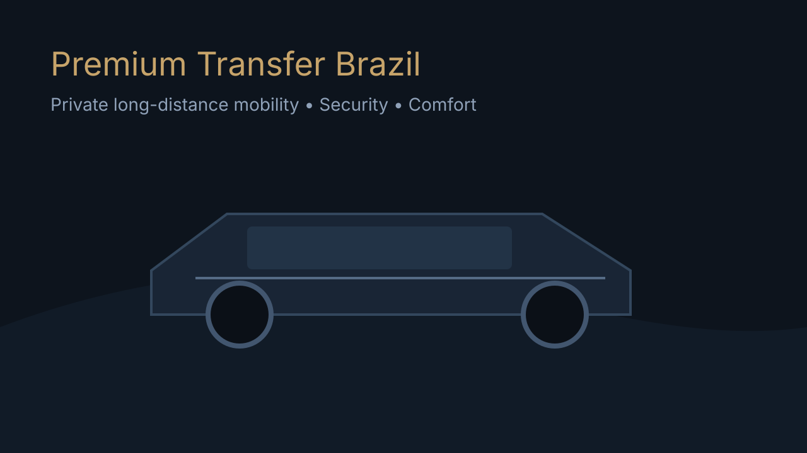

Бизнес и командировки
Точность по времени, маршрут без импровизаций, конфиденциальность поездки как стандарт.
Premium transfer • private driver Brazil
Это персонально организованная поездка, а не потоковый сервис. Безопасность, конфиденциальность и комфорт на длинных дистанциях для семей, бизнес-клиентов, релокантов и иностранных гостей.

Для тех, кто выбирает спокойную организацию, прозрачные условия и безопасную дистанцию без компромиссов.
Точность по времени, маршрут без импровизаций, конфиденциальность поездки как стандарт.
Комфорт на длинной дистанции, помощь с багажом и заранее согласованный план остановок.
Понятная коммуникация на вашем языке, спокойное вождение и предсказуемый процесс.
Предоставляется консультация по документам и нюансам пересечения границы в рамках действующих правил.
Стоимость и класс авто согласовываются до старта. Без попутчиков, без рискованного вождения, без изменения условий в процессе.
motorista particular Balneário Camboriú и private transfer Balneário Camboriú.
Открыть страницуtransfer Porto Alegre particular и long distance transfer Brazil.
Открыть страницуtraslado aeroporto Florianópolis и airport transfer Florianópolis.
Открыть страницу